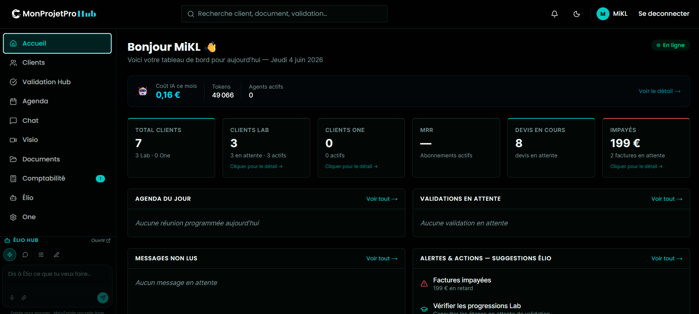
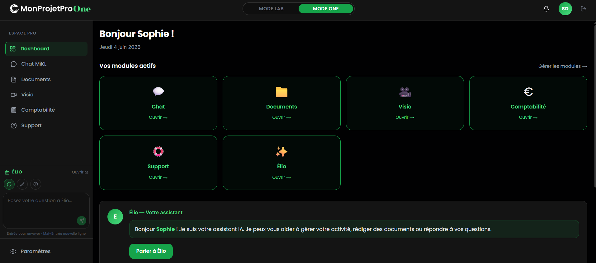
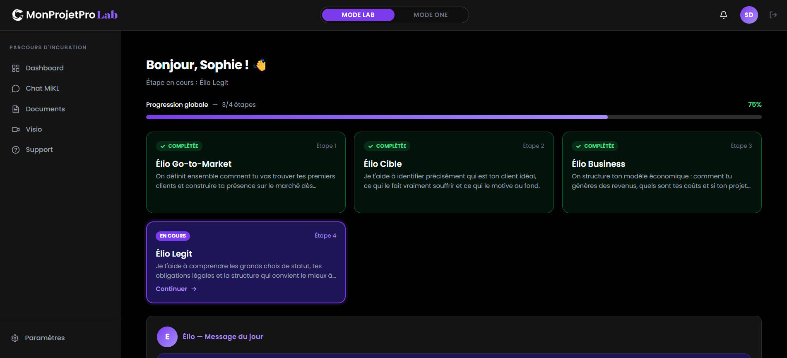
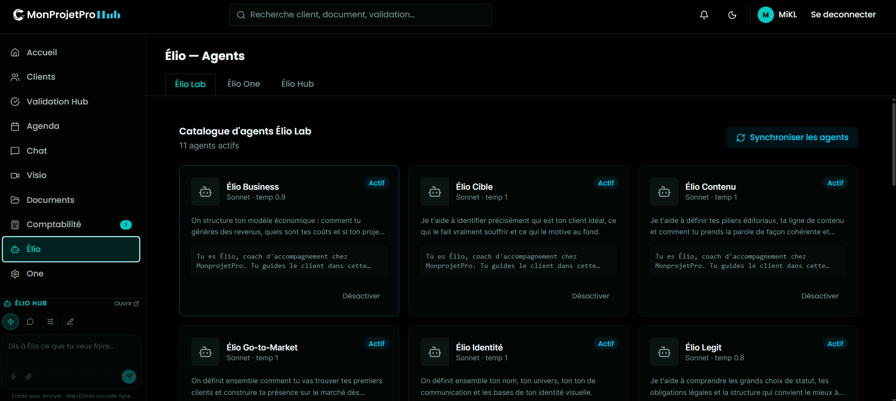
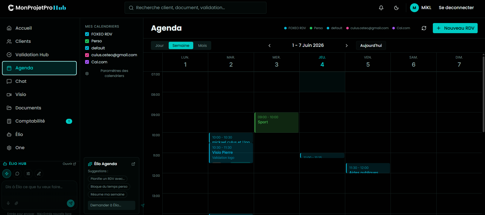
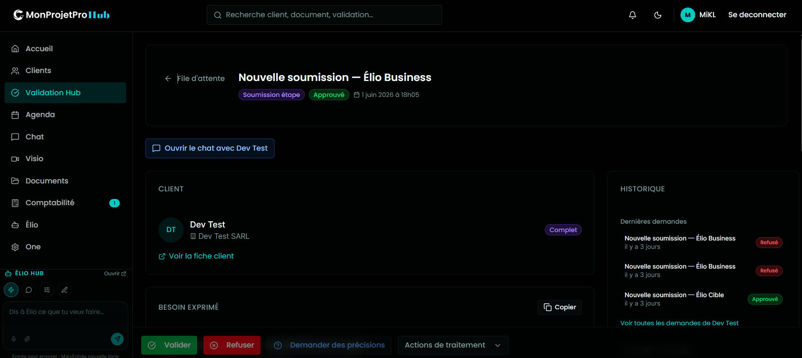
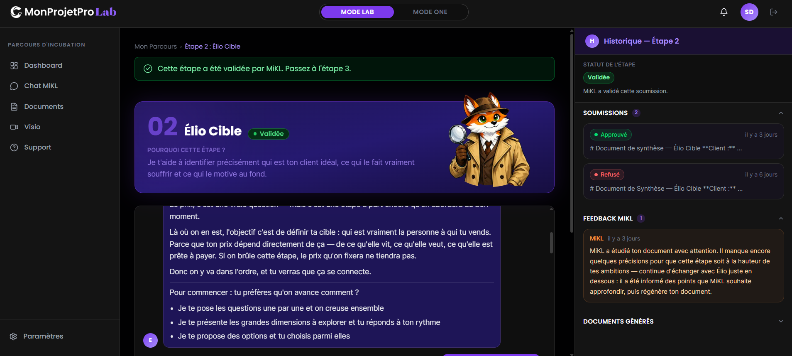

MonprojetPro
L'accompagnement entrepreneurial de l'idée au business opérationnel, réinventé par le modèle Centaure : une intelligence artificielle disponible 24/7, couplée à une expertise humaine sur-mesure.
« Donner à chaque projet la chance de devenir réalité. »
SaaS B2B · Next.js 16 · Supabase · IA agentique · monprojet-pro.com
Prototype fonctionnel — Juin 2026
L'entrepreneur est seul.
L'accompagnement ne passe pas à l'échelle.
Le créateur est perdu
Au démarrage, l'entrepreneur n'a ni méthode, ni recul, ni outil structurant. Il avance à l'instinct et perd un temps précieux.
L'expertise coûte cher
Une agence ou un coach à plein temps est inaccessible pour une TPE ou une association. L'accompagnement de qualité reste un luxe.
Les outils sont dispersés
CRM, facturation, documents, agenda, visio… chaque besoin = un logiciel de plus, sans cohérence ni mémoire commune.
Résultat : un accompagnement artisanal, non reproductible, qui ne scale pas — et un entrepreneur livré à lui-même entre deux rendez-vous.
Un écosystème de 3 dashboards,
un seul assistant qui grandit : Élio.
Le cockpit
L'expert pilote tous ses clients depuis une tour de contrôle unique : suivi, agenda, validation, IA.
La couveuse
Le client en création est guidé étape par étape pour structurer son projet, comme dans une école.
L'atelier équipé
Le client établi gère son activité au quotidien avec des modules sur-mesure activables à la demande.

Hub — cockpit de pilotage (clients, IA, validations, alertes)

One — espace pro à modules activables
Le client grandit avec son projet —
et son assistant grandit avec lui.
- 1Il arrive perdu — Élio Lab le guide comme un renardeau curieux qui pose les bonnes questions.
- 2Il progresse — chaque étape produit un document structuré : cible, business model, statut juridique, go-to-market.
- 3Il « gradue » — passage du Lab vers le One, avec héritage complet du contexte.
- 4Il devient autonome — son « renard adulte » connaît son terrain et propose des évolutions.
« Tu arrives avec une idée, tu repars avec un business opérationnel et ton assistant IA configuré. »

Lab — parcours d'incubation structuré (progression 3/4 étapes)
L'innovation n'est pas dans les briques.
Elle est dans l'intégration systémique.
Chat IA, dashboard, modules existent ailleurs. Personne ne les a assemblés en un modèle opérationnel cohérent pour le métier d'accompagnement.
| Niveau | Innovation |
|---|---|
| Modèle | Centaure — IA 24/7 + expert humain ponctuel |
| Produit | Maturation double : le projet ET l'agent grandissent |
| Produit | Architecture modulaire plug & play |
| Produit | Mémoire continue Lab → One |
| Expérience | Agent personnalisé sur les outils du client |

Catalogue de 11 agents IA spécialisés (Business, Cible, Légit, Go-to-Market…)
Avantage défendable : le facile-à-copier (modules, chat) ne fait pas le produit. La méthodologie de maturation + la relation Centaure + l'accumulation de contexte sur la durée constituent la vraie barrière.
Les premières fondations
sont posées.
Développé en propre (Next.js 16 · React 19 · Supabase), un premier socle est déjà en place. C'est un point de départ, pas une fin — le financement doit permettre de l'amener jusqu'au déploiement client et à la mise à l'échelle.

Agenda multi-calendriers + suggestions IA

Validation Hub — workflow valider / refuser

Étape guidée + documents générés par l'IA
Démocratiser l'accompagnement de qualité.
TPE, associations, créateurs
Ceux qui n'ont pas les moyens d'une agence mais ont besoin de structure, d'outils et d'un cap clair pour réussir.
Du temps et de la clarté
L'IA traite le répétitif et le structurant 24/7 ; l'humain intervient là où sa valeur est maximale.
Des projets qui aboutissent
Mieux accompagnés, plus de créateurs franchissent les étapes critiques — viabilité, statut, premiers clients.
Digitalisation des petites structures
Un outil unique remplace une pile de logiciels disparates et met l'IA à portée des plus petites organisations.
Un besoin massif, largement non couvert.
La grande majorité de ces porteurs de projet avancent sans accompagnement structuré ni outils digitaux intégrés. Capter ne serait-ce qu'une fraction de ce volume représente un marché considérable — et une mission utile.
Ordres de grandeur — sources publiques (INSEE, paysage associatif français). Chiffres à sourcer précisément dans le dossier.
Une association, une assistante
qui gère tout. Notre premier terrain.
Le MVP est dimensionné sur un cas réel et complet : une association dont l'assistante de direction gère l'administratif, les formations, les événements et les adhésions.
Cas servant de référence pour démontrer le savoir-faire complet sur un périmètre métier réel. Le déploiement client est la prochaine étape.
Le workflow Client + Élio préparent → l'expert valide en 1 clic
La qualité sur-mesure, enfin reproductible.
Le Lab à 199 €
Une offre Lab unique et accessible — 199 €, intégralement déduits de tout développement sur-mesure futur. Le ticket d'entrée ne pénalise jamais celui qui va plus loin : tout le monde a sa chance.
Coût marginal maîtrisé
L'IA absorbe le volume sans coût humain proportionnel. L'expert se concentre sur la valeur ajoutée.
Une base, tous les clients
Architecture multi-tenant : un déploiement unique sert tous les clients. La graduation Lab→One est un simple changement de statut.
Chaque client accompagné enrichit la méthodologie et les modules réutilisables — l'actif grandit à chaque projet.
Un fondateur qui code
réellement le produit.
MiKL — développeur full-stack & product builder
Conçoit et développe la plateforme en propre (Next.js, React, Supabase), augmenté par l'IA. Le produit n'est pas sous-traité : il est maîtrisé de bout en bout.
Automatisation de process métier
Identifier les tâches répétitives d'un client et les transformer en modules sur-mesure. C'est le cœur de la proposition de valeur.
Capacité d'exécution démontrée : un premier socle des 3 dashboards a déjà été prototypé (cf. captures) — une base solide qu'un financement permettrait de consolider et de mener jusqu'au déploiement.
Où nous en sommes, où nous allons.
Premières fondations
Socle technique des 3 dashboards, premiers agents Élio, Validation Hub, modules cœur prototypés. Une base à consolider.
Mise en production & 1ᵉʳ client
Déploiement du cas association, analytics, notifications push, PWA, sécurité renforcée (2FA), automatisations avancées.
Passage à l'échelle
Multi-utilisateurs, API publique, marketplace de modules, multi-langue. Industrialisation de l'accompagnement.
Un projet qui coche
plusieurs dispositifs d'aide.
| Axe d'aide | Pertinence MonprojetPro | Usage du financement |
|---|---|---|
| Innovation | Fort — IA agentique, architecture modulaire | R&D produit, agents IA |
| Transition numérique | Fort — digitalisation TPE / associations | Industrialisation, sécurité |
| Création d'entreprise | Fort — structuration & lancement | Mise en production, 1ᵉʳ client |
| Ressources humaines | Selon trajectoire — recrutement à venir | Premières embauches (P3) |
Le financement servirait à passer du prototype fonctionnel au déploiement client : industrialisation, sécurité, R&D des agents IA, et accompagnement des premiers utilisateurs.
MonprojetPro
Une base sérieuse déjà amorcée, une innovation systémique défendable, une utilité économique et numérique réelle — portée par un fondateur engagé. Le financement, c'est ce qui permettra d'aboutir sereinement.
« Donner à chaque projet — y compris le mien — la chance de devenir réalité. »
MiKL — MonprojetPro
contact@monprojet-pro.com
monprojet-pro.com